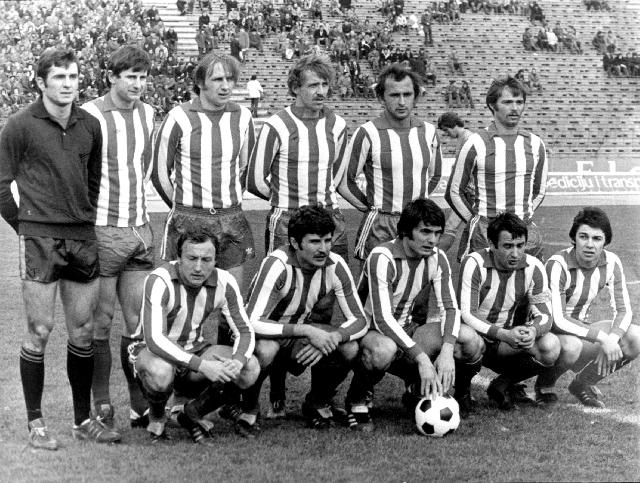
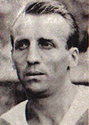
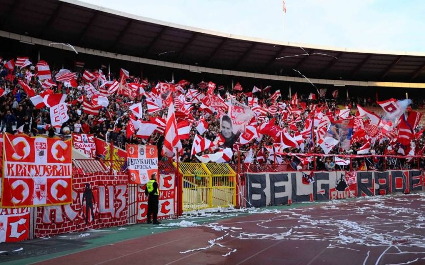

Добродошли на портал фудбалског клуба Црвена Звезда!

ФК Црвена звезда је српски фудбалски клуб из Београда и део је СД Црвена звезда. Црвена звезда је најтрофејнији фудбалски клуб у Србији освојивши укупно 56 титула, укључујући 28 домаћих шампионата, 24 национална купа, два Митропа купа, један Куп шампиона и један Интерконтинентални куп. Највећи успех постигнут је 1991. године када осваја Куп европских шампиона у Барију и Интерконтинентални куп у Токију исте године. Било је то највеће достигнуће Црвене звезде и било ког српског, а тада и југословенског фудбалског клуба. Поред тог успеха у европским такмичењима, издваја се и финале Купа УЕФА 1979, где су поражени од Борусије из Менхенгладбаха. Игра на свом стадиону који од 2014. носи име по легенди Црвене звезде Рајку Митићу, са капацитетом од 55.538 седећих места. Стадион је међу домаћом публиком познат као Маракана по називу истоименог стадиона у Бразилу, иако му то никад није био званичан назив. Према већини истраживања Црвена звезда је најпопуларнији клуб у Србији и Београду. Такође веома је популаран готово у свим суседним државама али и међу српском популацијом широм света. Клуб има дугогодишње ривалство са Партизаном. Од 2011. године постоји и женски клуб Црвене звезде.
Историја
Прва утакмица је одиграна против Првог батаљона Друге бригаде КНОЈ-а. Звезда је добила тај меч са 3-2, а стрелац првог гола је био Коста Томашевић.Утакмица је одиграна на стадиону „Авала“ (бивше игралиште СК Југославије) пред око 3000 гледалаца.Седам дана касније Звезда је играла против играча британске армије и победила са 12:0. Током 1945. године клуб је одиграо око 36 мечева. Црвена звезда је забележила победе у 30 мечева, играла нерешено 5 и изгубила један меч од Румуније у Темишвару 23. септембра 1945. године. Након прве четири сезоне без иједног освојеног трофеја, Црвена звезда је освојила Куп Југославије 1948. победом од 3:0 у финалу над Партизаном. Тај успех је поновљен и у наредне две године, победама у финалима прво над Нашим крилима (3:2), а затим и над загребачким Динамом (3:0). Низ великог успеха је настављен и 1951. када је клуб по први пут постао првак Југославије. Иако се на само три кола пред крај првенства чинило да је првенство решено јер је Динамо имао пет бодова више у односу на Звезду, а тада су се за победу добијала два бода. Прво је Звезда искористила пораз Загрепчана од Сарајева, а затим их је и међусобном дуелу савладала. На тај начин им је пред последње коло пришла на само бод заостатка. У том последњем колу БСК је успео да Динаму узме бод, а Црвена звезда је успела да добије Партизан са 2:0. О титули првака је одлучила боља гол-разлика која је била на страни Звезде.
Црвена звезда је наредну титулу освојила у сезони 1952/53., али су се праве промене у клубу догодиле средином те деценије. Тада је на место председника клуба дошао Душан Благојевић, Слободан Ћосић је постао генерални секретар, а на месту техничког директора се нашао Аца Обрадовић, познатији под надимком „Доктор О“. Они су створили генерацију играча која је пет година доминирала домаћим првенством и која је остварила значајне резултате и на међународној сцени. У Европа купу I, ова генерација је успела да стигне до полуфинала у сезони 1956/57. Након тога је освојен и Дунавски куп 1958. Тим у коме су играли фудбалери као што су Беара, Дурковић, Станковић, Поповић, Митић, Костић, Шекуларац, освојили су четири титуле првака и два Купа, и при томе ни у једној од тих пет сезоне нису остали без трофеја. Звездина игра била је брза и нападачка, што је клубу веома брзо донело велику популарност у земљи и свету. Паралелно са успесима на терену, Обрадовић је оформио основу стручног рада на којој ће се базирати каснији велики успеси Црвене звезде.
Црвена звезда је српски клуб са највећим бројем навијача према већини истраживања која су спроведена у Србији. Навијачи Црвене звезде се називају Делије. Ова навијачка група настала је уједињењем дотадашњих мањих навијачких група 7. јануара 1989. Делије су увек имале своје групе и подгрупе, тренутно неке од најзначајнијих су: Belgrade boys, Brigate, Ultra Boys и Heroes. Навијачи Црвене звезде и Олимпијакоса развили су дубоко пријатељство. Навијачи оба тима су себе назвали „Православна браћа“ („Orthodox Brothers“). Много пута навијачи Црвене звезде из различитих навијачких клубова су били на утакмицама Олимпијакоса, посебно против њиховог највећег ривала Панатинаикоса. Однедавно „Orthodox Brothers“ су почели да укључују навијаче Спартака из Москве.